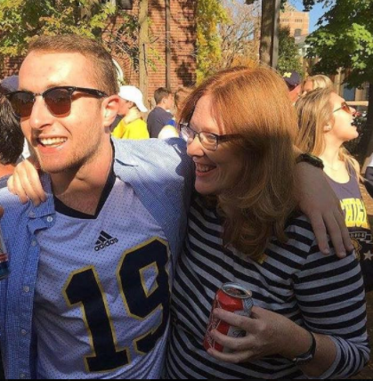
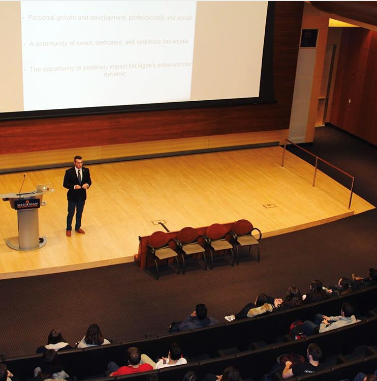

<style>
	#latest-repos-container h2 {
		margin-bottom: 2rem;
	}
	#latest-repos h4 {
		margin-bottom: 0.5rem;
	}
</style>

<section class="hero is-fullheight is-default">
	<div class="hero-body">
		<div id="info-container" class="container has-text-centered">
			<div class="columns is-vcentered">
				<div class="column is-two-thirds is-centered has-nice-link" itemscope itemtype="http://schema.org/Person">
					
					<h1 class="title is-2" itemprop="name">Daniel Schorin</h1>
					<h2 class="subtitle is-4" itemprop="description">Information Analytics and Business student at the University of Michigan</h2>
					<p>Currently experimenting with front-end development and application development<br class="is-hidden-small-screen"> </p>
					<br>
					<p class="has-text-centered">
						<a class="button is-large is-primary is-outlined" href="https://medium.com/@danielschorin">
							<span class="icon">
								<i class="fa fa-medium"></i>
							</span>
							<span>Writings</span>
						</a>
						<a class="button is-large is-primary is-outlined" href="https://github.com/djschor">
							<span class="icon">
								<i class="fa fa-github"></i>
							</span>
							<span>Github</span>
						</a>
						<a class="button is-large is-primary is-outlined" href="https://twitter.com/danielschorin">
							<span class="icon">
								<i class="fa fa-twitter"></i>
							</span>
							<span>Tweets</span>
						</a>
						<a class="button is-large is-primary is-outlined" href="https://www.linkedin.com/in/daniel-schorin-85a626b1/"> 
							<span class="icon"
								<i class="fa fa-linkedin-square"></i>
							</span>
							<span>LinkedIn</span>
						</a>
					</p>
					<hr id="latest-blog-post-separator">
					<div id="latest-blog-post">
						<h4 class="title is-4">
							<a class="is-gray-link" href=""></a>
							<span class="tag is-small">Medium</span>
						</h4>
						<p></p>
					</div>
				</div>
			</div>
		</div>
	</div>
	<div class="hero-foot">
		<div class="container">
			<div class="tabs is-centered">
				<ul>
					<li>
						<i id="scroll-hint" class="fa fa-caret-down" aria-hidden="true"></i>
					</li>
				</ul>
			</div>
		</div>
	</div>
</section>

<section class="hero is-fullheight is-bold">
	<div id="projects" class="hero-body container">
		<div class="columns is-vcentered">
			<div class="column has-text-centered has-nice-link">
				<h4 class="title is-4" style="font-weight: 400"></h4>
			</div>
			<div class = "container" class="column is-half is-offset-1 has-nice-link">
				<h2 class="title is-2">About</h2>
				<div class="column is-two-thirds is-centered has-nice-link" itemscope itemtype="http://schema.org/Person">

					
					<p3 class="paragraph"> Welcome! I'm Daniel Schorin, a Information Analytics and Business student at the University of Michigan. My interests lie on intersection of business strategy, information technology, and product development.</p>		
				</div>
		</div>
	</div>
</section>

<section class="hero is-fullheight is-gray">
	<div id="projects" class="hero-body container">
		<div class="columns is-vcentered">
			<div class="column has-text-centered has-nice-link">
				
				<h4 class="title is-4" style="font-weight: 400"></h4>
			</div>
			<div id="latest-repos-container" class="column is-half is-offset-1 has-nice-link">
				<h2 class="title is-2">Latest Code</h2>
				<template id="latest-repos-template">
					<div class="column is-half">
						<h4 class="title is-4">
							<a class="latest-repos-title" href=""></a>
							<span class="tag is-small latest-repos-language">¯\_(ツ)_/¯</span>
						</h4>
						<p class="latest-repos-description"></p>
					</div>
				</template>
				<div id="latest-repos" class="columns is-multiline"></div>
			</div>
		</div>
	</div>
</section>
<section class="section hero is-fullheight is-default is-bold">
	<div id="apps" class="container">
		<h2 class="title is-2">Apps</h2>
		<div class="columns is-multiline">
			{% for app in site.apps reversed %}
			<div class="column is-mobile is-half-tablet is-one-third-desktop">
				<a href="{% if app.external_url %}{{ app.external_url }}{% else %}{{ app.url }}{% endif %}">
					<div class="box">
						<figure class="image">
							{% comment %}
								This mess is needed because we don't know the extension of the thumbnail upfront...
							{% endcomment %}

							{% for file in site.static_files %}
								{% assign path = '/assets/' | append: app.slug | append: '/thumbnail' %}
								{% if file.path contains path %}
									
								{% endif %}
							{% endfor %}
						</figure>
						<h2 class="title">
							<span>{{ app.title }}</span>
							{% if app.is_prerelease %}
								<span class="tag is-small is-info">Prerelease</span>
							{% elsif forloop.first %}
								<span class="tag is-small is-success">New!</span>
							{% endif %}
							<span class="tag is-small">{{ app.type }}</span>
						</h2>
						<p class="subtitle is-6">{{ app.subtitle }}</p>
					</div>
				</a>
			</div>
			{% endfor %}
		</div>
	</div>
</section>


